Code
library(tidyverse)
library(easystats)
library(rstanarm)Nach Absolvieren des jeweiligen Kapitel sollen folgende Lernziele erreicht sein.
Sie können …
In diesem Kapitel benötigen Sie folgende R-Pakete.
library(tidyverse)
library(easystats)
library(rstanarm)Da wir in diesem Kapitel immer mal wieder eine Funktion aus dem R-Paket {easystats} verwenden: Hier finden Sie eine Übersicht aller Funktionen des Pakets.1
Die (einfache) Regression prüft, inwieweit zwei Variablen, \(Y\) und \(X\) linear zusammenhängen. Je mehr sie zusammenhängen, desto besser kann man \(X\) nutzen, um \(Y\) vorherzusagen (und umgekehrt). Hängen \(X\) und \(Y\) zusammen, heißt das nicht (unbedingt), dass es einen kausalen Zusammenhang zwischen \(X\) und \(Y\) gibt. Linear ist ein Zusammenhang, wenn der Zuwachs in \(Y\) relativ zu \(X\) konstant ist: wenn \(X\) um eine Einheit steigt, steigt \(Y\) immer um \(b\) Einheiten (nicht kausal, sondern deskriptiv gemeint).
Datenquelle, McElreath (2020).
Laden wir die !Kung-Daten und visualisieren wir uns den Zusammenhang zwischen Gewicht (X) und Größe (Y), Abbildung 9.1.
Kung_path <- "https://raw.githubusercontent.com/sebastiansauer/Lehre/main/data/Howell1a.csv"
d <- read_csv(Kung_path)
d2 <-
d %>%
filter(age > 18)
d2 %>%
ggplot(
aes(x = weight, y = height)) +
geom_point(alpha = .7) +
geom_smooth(method = "lm")Komfort pur: Unser Modell erlaubt uns für jeden beliebigen Wert des Prädiktors eine Post-Verteilung (von \(\mu\)) zu berechnen.
Hier am Beispiel von m42, s. Abbildung 9.2.

Hier sind die zentralen deskriptiven Statistiken zum !Kung-Datensatz.
Kung_path <- "https://raw.githubusercontent.com/sebastiansauer/Lehre/main/data/Howell1a.csv"
d <- read_csv(Kung_path)
d2 <- d %>% filter(age > 18)
describe_distribution(d2)| Variable | Mean | SD | IQR | Min | Max | Skewness | Kurtosis | n | n_Missing |
|---|---|---|---|---|---|---|---|---|---|
| height | 154.6443688 | 7.7735641 | 12.065000 | 136.52500 | 179.07000 | 0.1434736 | -0.4973852 | 346 | 0 |
| weight | 45.0455429 | 6.4552197 | 9.135626 | 31.52464 | 62.99259 | 0.1398158 | -0.5317283 | 346 | 0 |
| age | 41.5397399 | 15.8093044 | 22.000000 | 19.00000 | 88.00000 | 0.6758624 | -0.2014534 | 346 | 0 |
| male | 0.4739884 | 0.5000461 | 1.000000 | 0.00000 | 1.00000 | 0.1046415 | -2.0006483 | 346 | 0 |
| weight_c | 0.0000000 | 6.4552197 | 9.135626 | -13.52090 | 17.94705 | 0.1398158 | -0.5317283 | 346 | 0 |
Das mittlere Körpergewicht (weight) liegt bei ca. 45kg (sd 7 kg).
Wir brauchen die EDA hier nicht wirklich, aber es ist praktisch. Das Paket DataExplorer hat ein paar nette Hilfen zur explorativen Datenanalyse.
library(DataExplorer)Nein, s. Abb. Abbildung 9.3.
d2 %>% plot_missing()d2 %>% plot_histogram()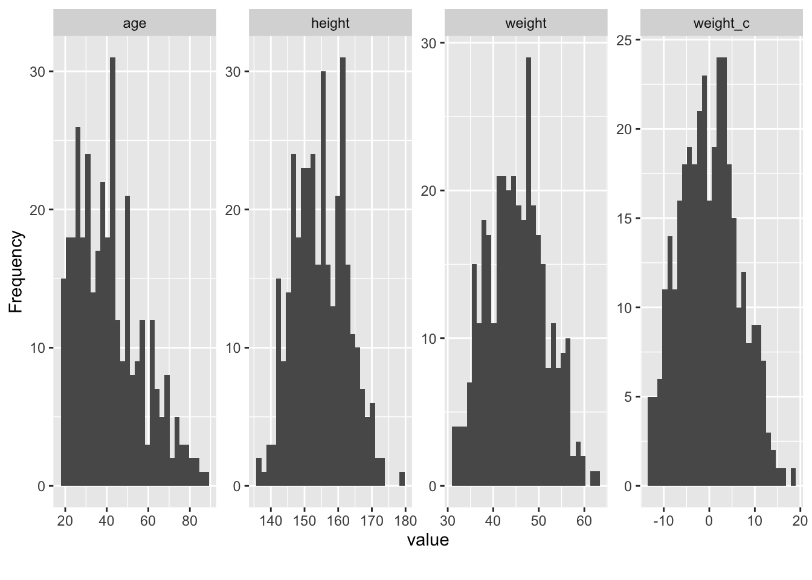
d2 %>% plot_bar()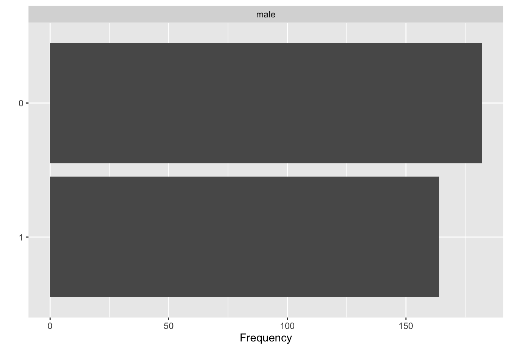
d2 %>% plot_correlation()Probieren Sie mal die folgende Funktion aus, die Ihnen einen Bericht zur EDA erstellt: create_report(d2).
Zieht man von jedem Gewichtswert den Mittelwert ab, so bekommt man die Abweichung des Gewichts vom Mittelwert (Prädiktor “zentrieren”). Wenn man den Prädiktor (weight) zentriert hat, ist der Achsenabschnitt, \(\alpha\), einfacher zu verstehen. In einem Modell mit zentriertem Prädiktor (weight) gibt der Achsenabschnitt die Größe einer Person mit durchschnittlichem Gewicht an. Würde man weight nicht zentrieren, gibt der Achsenabschnitt die Größe einer Person mit weight=0 an, was nicht wirklich sinnvoll zu interpretieren ist.
Vgl. Gelman, Hill, und Vehtari (2021), Kap. 10.4, 12.2.
So kann man das Zentrieren bewerkstelligen:
d3 <-
d2 %>%
center(weight)Oder so, von Hand:
d3 <-
d2 %>%
mutate(weight_c = weight - mean(weight))| height | weight | age | male | weight_c |
|---|---|---|---|---|
| 152 | 48 | 63 | 1 | 3 |
| 140 | 36 | 63 | 0 | −9 |
| 137 | 32 | 65 | 0 | −13 |
Wie man sieht, ist die Verteilung “zur Seite geschoben”: Der Mittelwert liegt jetzt eben bei 0.

Das schwierigste ist dabei, nicht zu vergessen, dass d3 die Tabelle mit zentriertem Prädiktor ist, nicht d2.
Einige Regressionskoeffizienten, wie der Achsenabschnitt (Intercept) sind schwer zu interpretieren: Bei einem (erwachsenen) Menschen mit Gewicht 0, was wäre wohl die Körpergröße? Hm, Philosophie steht heute nicht auf der Tagesordnung.
Da wäre es schön, wenn wir die Daten so umformen könnten, dass der Achsenabschnitt eine sinnvolle Aussage macht. Zum Glück geht das leicht: Wir zentrieren den Prädiktor (Gewicht)!
Durch Zentrieren kann man die Ergebnisse einer Regression einfacher interpretieren.
m43weight_centered), \(wc_i\), wird eine Post-Verteilung für die abhängige Variable (height, \(h_i\)) berechnet.height) angibt; dieser Wert wird als exonentialverteilt angenommen.height ist, gegeben \(\mu\) und \(\sigma\).\[\begin{align*} \color{red}{\text{height}_i} & \color{red}\sim \color{red}{\operatorname{Normal}(\mu_i, \sigma)} && \color{red}{\text{Likelihood}} \\ \color{green}{\mu_i} & \color{green}= \color{green}{\alpha + \beta\cdot \text{weight}_i} && \color{green}{\text{Lineares Modell} } \\ \color{blue}\alpha & \color{blue}\sim \color{blue}{\operatorname{Normal}(178, 20)} && \color{blue}{\text{Priori}} \\ \color{blue}\beta & \color{blue}\sim \color{blue}{\operatorname{Normal}(0, 10)} && \color{blue}{\text{Priori}}\\ \color{blue}\sigma & \color{blue}\sim \color{blue}{\operatorname{Exp}(0.1)} && \color{blue}{\text{Priori}} \end{align*}\]
Der Achsenabschnit (engl. intercept) eines Regressionsmodell wird in der Literatur oft mit \(\beta_0\) bezeichnet, aber manchmal auch mit \(\alpha\). Und manchmal mit noch anderen Buchstaben, das Alphabet ist weit. 🤷
m43\[ \begin{aligned} \color{red}{\text{height}_i} & \color{red}\sim \color{red}{\operatorname{Normal}(\mu_i, \sigma)} && \color{red}{\text{Likelihood}} \end{aligned} \]
m43 ist ähnlich zu den vorherigen Modellen (m41, m42).heights).“Die Wahrscheinlichkeit, eine bestimmte Größe bei Person \(i\) zu beobachten, gegeben \(\mu\) und \(\sigma\) ist normalverteilt (mit Mittelwert \(\mu\) und Streuung \(\sigma\))”.
m43\[ \begin{aligned} \color{green}{\mu_i} & \color{green}= \color{green}{\alpha + \beta\cdot \text{weight}_i} && \color{green}{\text{Lineares Modell} } \\ \end{aligned} \]
weight) der \(i\)ten Beobachtung, also einer !Kung-Person (Zeile \(i\) im Datensatz).“Der Mittelwert \(\mu_i\) der \(i\)ten Person berechnet sich als Summe von \(\alpha\) und \(\beta\) mal \(\text{weight}_i\)”.
weight.height zweier Beobachtung an, die sich um eine Einheit in weight unterscheiden (Steigung der Regressionsgeraden).weight Null ist (Achsenabschnitt, engl. intercept).m43\[\begin{align*} \color{blue}\alpha & \color{blue}\sim \color{blue}{\operatorname{Normal}(178, 20)} && \color{blue}{\text{Priori Achsenabschnitt}} \\ \color{blue}\beta & \color{blue}\sim \color{blue}{\operatorname{Normal}(0, 10)} && \color{blue}{\text{Priori Regressionsgewicht}}\\ \color{blue}\sigma & \color{blue}\sim \color{blue}{\operatorname{Exp}(0.1)} && \color{blue}{\text{Priori Sigma}} \end{align*}\]
m41 als \(\mu\) bezeichnet, da wir dort eine “Regression ohne Prädiktoren” berechnet haben.height nicht zentriert ist, der Mittelwert von \(\alpha\) bei 178 und nicht 0.🏎️ VERTIEFUNG 🏎️
🤔 Moment. Dieser Prior, \(\beta\) in m43 erachtet positive und negative Zusammenhang als gleich wahrscheinlich?!
Sind wir wirklich indifferent, ob der Zusammenhang von Gewicht und Größe positiv oder negativ ist? Nein, sind wir nicht.
m43Was denkt wir bzw. unser Golem apriori über den Zusammenhang von Größe und Gewicht? Um diese Frage zu beantworten ziehen wir Stichproben aus den Priori-Verteilungen des Modells, also für \(\alpha\), \(\beta\) und \(\sigma\).
m43_prior_pred <-
stan_glm(height ~ weight_c,
prior = normal(0, 10),
prior_intercept = normal(178, 20), # mu
prior_aux = exponential(0.1), # sigma
refresh = FALSE,
prior_PD = TRUE, # Schalter für Prior-Pred-Verteilung
data = d2)
m43_prior_pred_draws <-
m43_prior_pred %>%
as_tibble() %>%
rename(a = `(Intercept)`,
b = weight_c) %>%
slice_sample(n = 50)| a | b | sigma |
|---|---|---|
| 177.9 | 4.3 | 2.8 |
| 158.4 | −6.0 | 2.3 |
| 173.9 | 6.4 | 22.1 |
| 155.8 | −8.6 | 3.7 |
| 189.0 | −12.6 | 3.8 |
Jede Zeile definiert eine Regressionsgerade.
m43 mit stan_glm()m43_prior_pred <-
stan_glm(height ~ weight_c,
prior = normal(0, 10), # beta
prior_intercept = normal(178, 20), # alpha
prior_aux = exponential(0.1), # sigma
refresh = FALSE,
prior_PD = TRUE, # DIESER Schalter macht's
data = d2)
m43_prior_pred_draws <-
m43_prior_pred %>%
as_tibble() %>%
rename(a = `(Intercept)`,
b = weight_c) %>%
slice_sample(n = 50)d2 %>% ggplot() +
geom_point(aes(x = weight_c, y = height)) +
geom_abline(data = m43_prior_pred_draws,
aes(intercept = a, slope = b), color = "skyblue", size = 0.2) +
scale_y_continuous(limits = c(0, 500)) +
geom_hline(yintercept = 272, size = .5) +
geom_hline(yintercept = 0, linetype = "dashed")🤯 Einige dieser Regressionsgeraden sind unsinnig!
d2 %>% ggplot() +
geom_point(aes(x = weight_c, y = height)) +
geom_abline(data = m43_prior_pred_draws,
aes(intercept = a, slope = b), color = "skyblue", size = 0.2) +
scale_y_continuous(limits = c(0, 500)) +
geom_hline(yintercept = 272, size = .5) +
geom_hline(yintercept = 0, linetype = "dashed")
Die durchgezogene horizontale Linie gibt die Größe des größten Menschens, Robert Pershing Wadlow, an.
Eine Normalverteilung mit viel Streuung:
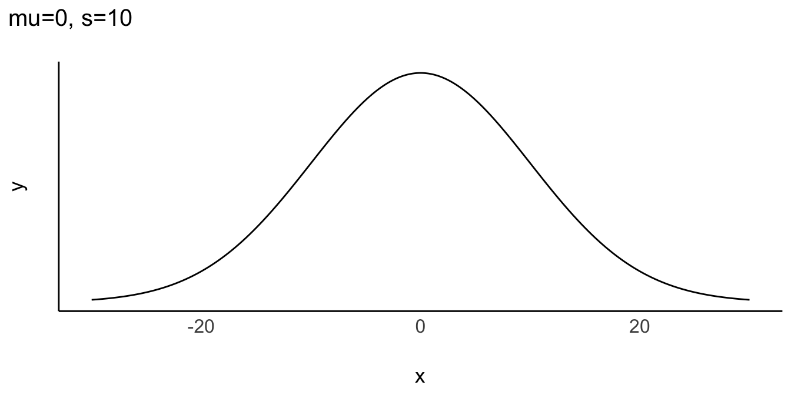
👎 \(\beta=-20\) wäre mit diesem Prior gut möglich: Pro kg Gewicht sind Menschen im Schnitt 20cm kleiner, laut dem Modell. Quatsch.
Wir bräuchten eher so eine Verteilung, mit mehr Masse auf der positiven Seite (x>0):
👍 Vermutlich besser: Ein Großteil der Wahrscheinlichkeitsmasse ist \(X>0\). Allerdings gibt’s keine Gewähr, dass unser Prior “richtig” ist.
m43a_prior_pred <-
stan_glm(
height ~ weight_c,
prior = normal(2, 2), # Regressionsgewicht
prior_intercept = normal(178, 20), # mu
prior_aux = exponential(0.1), # sigma
refresh = FALSE,
# Schalter für Prior-Pred-Verteilung:
prior_PD = TRUE,
data = d2)
m43a_prior_pred_draws <-
m43a_prior_pred %>%
as_tibble() %>%
# Spaltennamen kürzen:
rename(a = `(Intercept)`) %>%
rename(b = weight_c,
s = sigma)| a | b | s |
|---|---|---|
| 222.6 | 0.8 | 7.0 |
| 187.7 | 3.8 | 5.2 |
| 194.1 | 2.7 | 20.5 |
| 172.9 | 1.1 | 5.6 |
| 180.6 | 1.0 | 3.4 |
Das Argument prior_PD = TRUE sorgt dafür, dass keine Posteriori-Verteilung, sondern eine Prior-Prädiktiv-Verteilung berechnet wird.
m43aUnsere Priori-Werte scheinen einigermaßen vernünftige Vorhersagen zu tätigen. Allerdings erwartet unser Golem einige Riesen.
d2 %>%
ggplot(aes(x = weight_c, y = height)) +
geom_point() +
geom_abline(data = {m43a_prior_pred_draws %>% slice_head(n=50)},
aes(slope = b,
intercept = a),
color = "skyblue",
size = .2,
alpha = .7) +
geom_hline(yintercept = 272, size = .5) +
geom_hline(yintercept = 0, linetype = "dashed")+
scale_y_continuous(limits = c(0, 500)) 
Die durchgezogene horizontale Linie gibt die Größe des größten Menschens, Robert Pershing Wadlow, an.
Es doch den einen, richtigen, objektiven Priori-Wert geben?!
Kann denn jeder hier machen, was er will?! Wo kommen wir da hin?!
This is a mistake. There is no more a uniquely correct prior than there is a uniquely correct likelihood. Statistical models are machines for inference. Many machines will work, but some work better than others. Priors can be wrong, but only in the same sense that a kind of hammer can be wrong for building a table.
McElreath (2020), p. 96.
m43a\[\begin{align} \text{height}_i &\sim \operatorname{Normal}(\mu_i, \sigma) \\ \mu_i &= \alpha + \beta \cdot \text{weight}_i\\ \alpha &\sim \operatorname{Normal}(178, 20)\\ \beta &\sim \operatorname{Normal}(5,3)\\ \sigma &\sim \operatorname{Exp}(0.1) \end{align}\]
# Zufallszahlen festlegen:
set.seed(42)
# Posteriori-Vert. berechnen:
m43a <-
stan_glm(
height ~ weight_c, # Regressionsformel
prior = normal(5, 3), # Regressionsgewicht (beta 1)
prior_intercept = normal(178, 20), # mu
prior_aux = exponential(0.1), # sigma
refresh = 0, # zeig mir keine Details
data = d2)m43am43a %>%
parameters()| Parameter | Median | 95% CI | pd | Rhat | ESS | Prior |
|---|---|---|---|---|---|---|
| (Intercept) | 154.65 | (154.09, 155.21) | 100% | 0.999 | 4132.00 | Normal (178 +- 20) |
| weight_c | 0.91 | (0.83, 0.99) | 100% | 1.000 | 3837.00 | Normal (5 +- 3) |
Unser Modell m43a schätzt die typische Körpergröße einer !Kung-Person mittleren Gewichts (weight_c = 0) auf knapp 155 cm, und ist sich dieses Werts ziemlich sicher. Pro Kilogramm kommt (laut unserem Modell) ein knapper Zentimeter hinzu, typischerweise; auch hier ist sich das Modell ziemlich sicher, da dass zugehörige 95%-CI keine 20 Zentimenter umfasst.
Sagen wir, auf Basis gut geprüfter Evidenz haben wir folgendes Modell festgelegt: height ~ weight_c, s. Gleichung 9.1.
Prioris:
\[\beta_1 \sim N(5,3); \\ \beta_0 \sim N(178, 20); \\ \sigma \sim E(0.1) \tag{9.1}\]
Wir nennen das Modell m43a2.
# Posteriori-Vert. berechnen:
m43a <-
stan_glm(
height ~ weight_c, # Regressionsformel
prior = normal(5, 3), # Regressionsgewicht (beta 1)
prior_intercept = normal(178, 20), # mu
prior_aux = exponential(0.1), # sigma
refresh = 0, # zeig mir keine Details
seed = 42, # lege die Zufallszahlen fest für Reproduzierbarkeit
data = d2)Mit seed kann man die Zufallszahlen fixieren, so dass jedes Mal die gleichen Werte resultieren. So ist die Nachprüfbarkeit der Ergebnisse (“Reproduzierbarkeit”) sichergestellt3. Welche Wert für seed man verwendet, ist egal, solange alle den gleichen verwenden. Der Autor verwendet z.B. oft den Wert 42. Zur Erinnerung: Der Golem zieht Zufallszahlen, damit erstellt er Stichproben, die die Postverteilung schätzen.
Die ersten paar Zeilen:
| id | (Intercept) | weight_c | sigma |
|---|---|---|---|
| 1 | 155.1 | 0.9 | 5.0 |
| 2 | 155.5 | 0.8 | 5.1 |
| 3 | 155.5 | 0.9 | 5.1 |
Hier sind die Zusammenfassungen der Stichproben aus der Post-Verteilung, komfortabel zu erhalten mit dem Befehle parameters:
parameters(m43a)| Parameter | Median | 95% CI | pd | Rhat | ESS | Prior |
|---|---|---|---|---|---|---|
| (Intercept) | 154.65 | (154.14, 155.19) | 100% | 0.999 | 3214.00 | Normal (178 +- 20) |
| weight_c | 0.91 | (0.82, 0.99) | 100% | 1.001 | 4134.00 | Normal (5 +- 3) |
Die Kennzahl pd (propability of direction) gibt die Wahrscheinlichkeit an, dass der Effekt positiv (also größer als Null) oder negativ ist (jenachdem ob der Median des Effekts positiv oder negativ ist). pd gibt aber nicht an, wie stark der Effekt ist, nur ob er klar auf einer Seite der Null liegt. Damit ist er so etwas (grob!) Ähnliches wie der p-Wert in der Frequentistischen Statistik (Makowski u. a. 2019).
Am besten das Diagramm dazu anschauen, s Abbildung 9.4.
plot(p_direction(m43a))Rhat und ESS sind Kennzahlen, die untersuchen, ob mit der Stichprobenziehung im Bayes-Modell alles gut funktioniert hat. Bei einfachen Modellen (die wir hier berechnen) sollte da in der Regel alles in Ordnung sein. Rhat sollte nicht (viel) größer als 1 oder 1,01 sein. ESS (effective sample size) gibt die Anzahl der effektiv nutzbaren Stichproben an (im Standard werden 4000 berechnet). Die Zahl sollte nicht deutlich geringer sein.
Wir werden uns aber mit diesen beiden Kennwerten nicht weiter beschäftigen in diesem Kurs.
Zur Erinnerung: Die Bayes-Analyse liefert uns viele Stichproben zu den gesuchten Parametern, hier \(\beta_0\), \(\beta_1\) und \(\sigma\). Überzeugen wir uns mit einem Blick in die Post-Verteilung von m43a:
m43a %>%
as_tibble() %>%
head()| (Intercept) | weight_c | sigma |
|---|---|---|
| 155.1421 | 0.8581434 | 5.042898 |
| 155.4658 | 0.8348727 | 5.071101 |
| 155.4522 | 0.8549260 | 5.144382 |
| 155.2342 | 0.8816371 | 5.352756 |
| 155.3172 | 0.8745051 | 5.349856 |
| 154.9315 | 0.9030495 | 5.207581 |
Wir können z.B. ein Lagemaß wie den Median hernehmen, um die “mittlere” Regressionsgerade zu betrachten:
d2 %>%
ggplot() +
aes(x = weight_c, y = height) +
geom_point() +
geom_abline(
slope = 0.9, # Median beta 1
intercept = 154, # Median beta 0
color = "blue")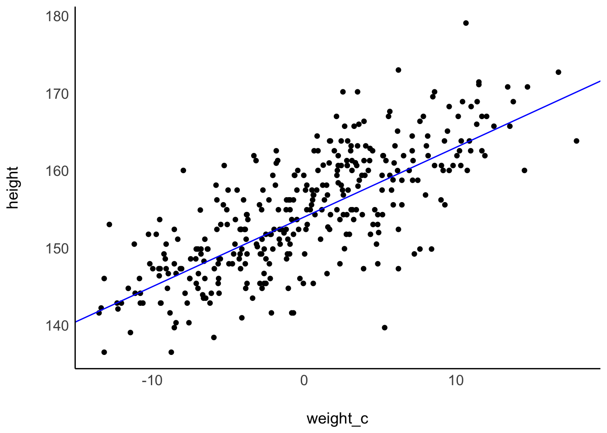
Einfacher ist die Syntax vielleicht, wenn man die Funktion estimate_expectation benutzt, s. Abbildung 9.5. Mit “expectation” sind hier die erwarteten Werte, also die Regressionsgerade, gemeint.
m43_expect <- estimate_expectation(m43a)
plot(m43_expect)In diesem Modell gibt es drei Parameter: \(\alpha, \beta, \sigma\).
Hier folgen einige Beispiele an Fragen, die wir an unser Modell bzw. die Post-Verteilung stellen können.
Eine nützliche Zusammenfassung der Post-Verteilung bekommt man mit parameters(modell):
m43a %>%
parameters()| Parameter | Median | 95% CI | pd | Rhat | ESS | Prior |
|---|---|---|---|---|---|---|
| (Intercept) | 154.65 | (154.14, 155.19) | 100% | 0.999 | 3214.00 | Normal (178 +- 20) |
| weight_c | 0.91 | (0.82, 0.99) | 100% | 1.001 | 4134.00 | Normal (5 +- 3) |
Wandelt man das Ausgabe-Objekt der Bayes-Regression, d.h. m43a, mit as_tibble() in eine Tabelle um, so bekommt man eine Tabelle mit den Stichproben der Post-Verteilung:
m43a_post <-
m43a %>%
as_tibble()
m43a_post %>%
head()| (Intercept) | weight_c | sigma |
|---|---|---|
| 155.1421 | 0.8581434 | 5.042898 |
| 155.4658 | 0.8348727 | 5.071101 |
| 155.4522 | 0.8549260 | 5.144382 |
| 155.2342 | 0.8816371 | 5.352756 |
| 155.3172 | 0.8745051 | 5.349856 |
| 154.9315 | 0.9030495 | 5.207581 |
Wie wir gesehen haben, nutzen wir diese Tabelle der Post-Verteilung immer wieder. Speichern wir uns sie also als ein Objekt ab, m43_post.
Jetzt haben wir wieder eine schöne Tabelle mit Stichproben aus der Post-Verteilung, die wir wie gewohnt befragen können.
Eine Visualisierung zeigt gut sowohl Lage- als auch Streuungsmaße der Parameter, zumindest grob.,
Oder man erstellt selber ein Diagramm mit ggplot.
m43a_post %>%
ggplot(aes(x = weight_c)) +
geom_density(fill = "orange")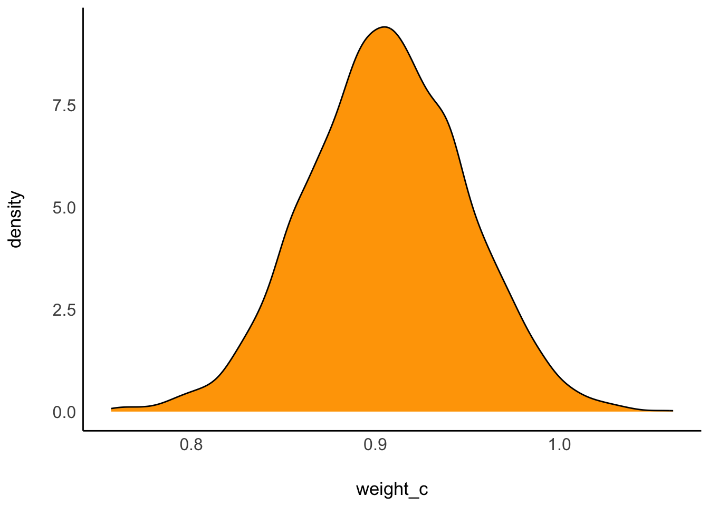
Das Diagramm zeigt, dass Mittelwert, Median und Modus eng zusammenliegen. Zur Erinnerung: Der Modus gibt den häufigsten, d.h. hier also den wahrscheinlichsten, Wert an.
Der Modus wird hier auch Maximum a Posteriori (MAP) genannt, daher:
m43a_post %>%
summarise(map_b1 = map_estimate(weight_c))Hier ist die Verteilung von \(\sigma\) visualisiert:
m43a_post %>%
ggplot(aes(x = sigma)) +
geom_density(fill = "orange")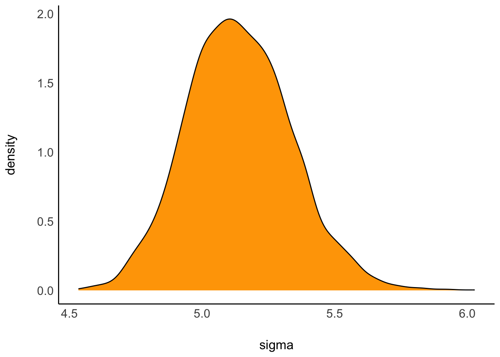
Alternativ kann man sich die Verteilung eines Parameters auch so ausgeben lassen, gleich mit Intervallgrenzen, z.B. 95%.
m43a_hdi <- hdi(m43a_post) # analog mit eti(m43a)
plot(m43a_hdi)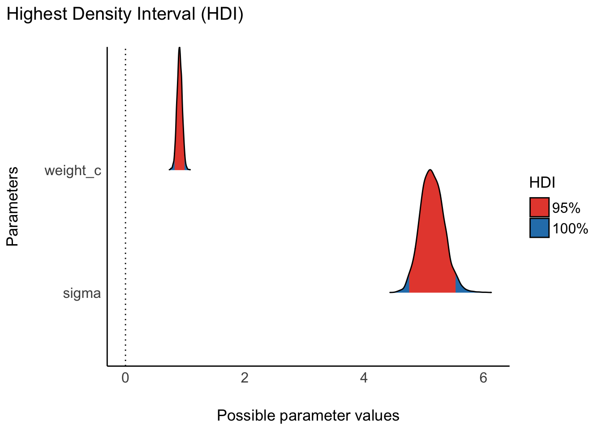
Ergänzt man bei plot() noch show_intercept = TRUE wird auch der Achsenabschnitt angezeigt.
Diese Frage wird durch die Ungewissheitsintervalle in der Ausgabe beantwortet.
An einigen Stellen wird empfohlen, anstelle eines (gebräuchlichen) 95%-Intervalls auf ein 90%- oder 89%-Intervall auszuweichen, aufgrund der besseren numerischen Stabilität.
Die ersten 10 Stichproben:
d2 %>%
ggplot(aes(x = weight_c,
y = height)) +
geom_point() +
geom_abline(
data = m43a_post %>%
slice_head(n = 10),
aes(slope = weight_c,
intercept = `(Intercept)`),
alpha = .3)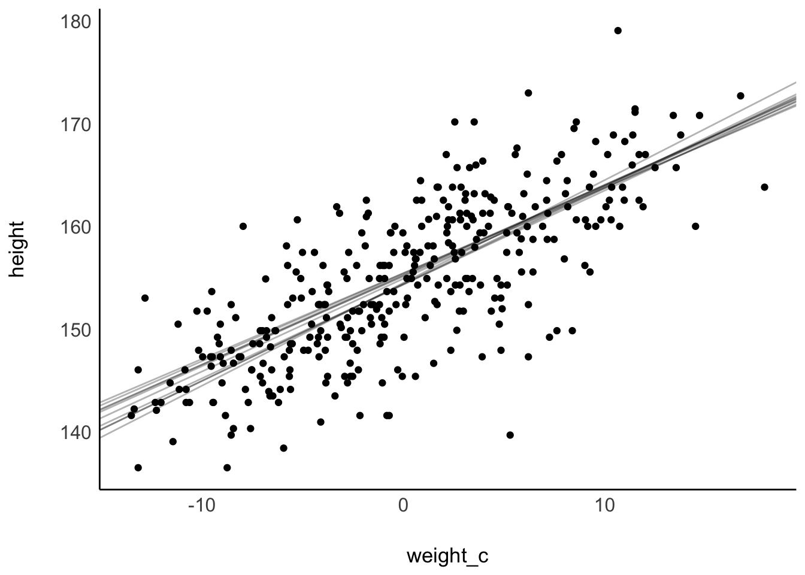
Die ersten 100 Stichproben:
d2 %>%
ggplot(aes(x = weight_c,
y = height)) +
geom_point() +
geom_abline(
data = m43a_post %>%
slice_head(n = 100),
aes(slope = weight_c,
intercept = `(Intercept)`),
alpha = .1)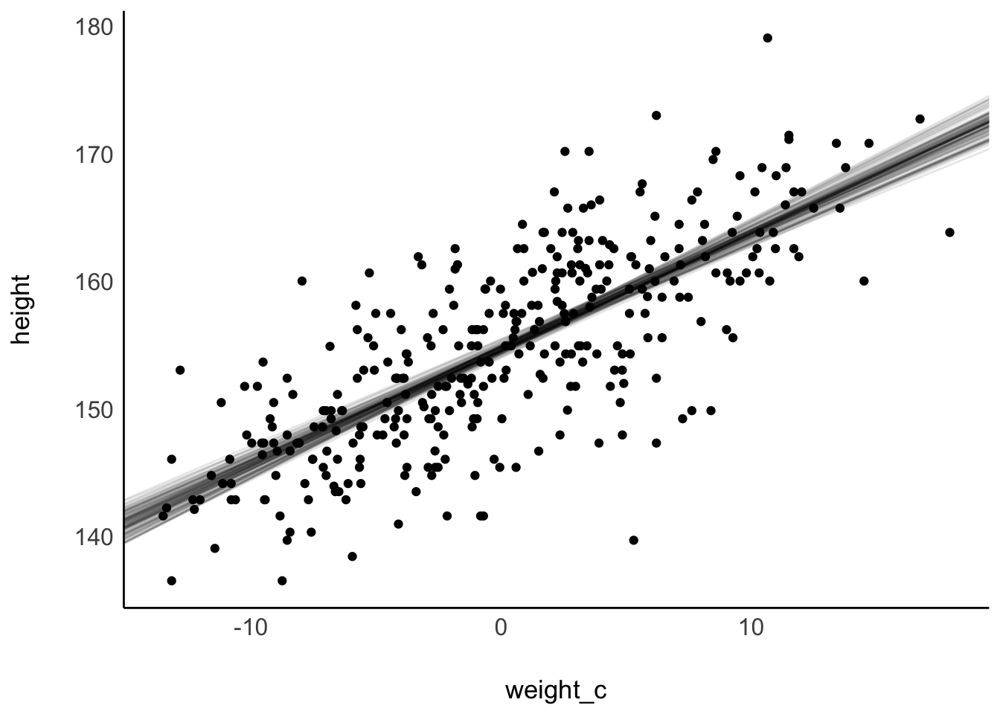
Die ersten 1e3 Stichproben:
d2 %>%
ggplot(aes(x = weight_c,
y = height)) +
geom_point() +
geom_abline(
data = m43a_post %>%
slice_head(n = 1e3),
aes(slope = weight_c,
intercept = `(Intercept)`),
alpha = .01)Die ersten 1000000 … okay, lassen wir es gut sein4.
Einfacher ist die Visualisierung mit estimate_expectation:
estimate_expectation(m43a) %>% plot()
Zur Erinnerung: Bei einem zentrierten Prädiktor misst der Achsenabschnitt die mittlere Größe.
Quantile:
m43a_post %>%
summarise(
q_50 = quantile(`(Intercept)`, prob = .5),
q_90 = quantile(`(Intercept)`, prob = .9),
q_05 = quantile(`(Intercept)`, prob = .95))| q_50 | q_90 | q_05 |
|---|---|---|
| 154.6548 | 155.0032 | 155.0951 |
50%-PI:
m43a %>%
eti(ci = .5)| Parameter | CI | CI_low | CI_high | Effects | Component |
|---|---|---|---|---|---|
| (Intercept) | 0.5 | 154.4632928 | 154.8373635 | fixed | conditional |
| weight_c | 0.5 | 0.8772824 | 0.9354291 | fixed | conditional |
Wie wahrscheinlich ist es, dass die mittlere Größe bei mind. 155 cm liegt?
m43a_post %>%
count(gross = `(Intercept)` >= 155) %>%
mutate(prop = n / sum(n))| gross | n | prop |
|---|---|---|
| FALSE | 3593 | 0.89825 |
| TRUE | 407 | 0.10175 |
Die Wahrscheinlichkeit beträgt 0.1.
Wie wahrscheinlich ist es, dass die mittlere Größe höchstens 154.5 cm beträgt?
m43a_post %>%
count(klein = (`(Intercept)` <= 154.5)) %>%
mutate(prop = n / sum(n))| klein | n | prop |
|---|---|---|
| FALSE | 2833 | 0.70825 |
| TRUE | 1167 | 0.29175 |
Die Wahrscheinlichkeit beträgt 0.29.
‚

Was ist wohl die Wahrscheinlichkeit der Körpergröße bei einem bestimmten Gewicht?
Angenommen wir wissen, dass das Gewicht bei, sagen wir 45 kg liegt. Welche Körpergröße ist (im Schnitt) zu erwarten? Wie unsicher sind wir uns über diesen Mittelwert?
Etwas formaler ausgedrückt:
\(\mu|\text{weight}=45\)
45 kg entspricht genau dem Mittelwert von weight. Geht man von zentrierten Prädiktorwerten aus, gilt in dem Fall weight_c = 0. Erstellen wir uns dazu eine Tabelle:
mu_at_45 <-
m43a_post %>%
mutate(mu_at_45 = `(Intercept)`)Und plotten diese, s. Abbildung 9.6.
mu_at_45 %>%
ggplot(aes(x = mu_at_45)) +
geom_density()Analog können wir fragen, wie groß wohl eine Person mit 50 kg im Mittelwert sein wird und wie (un)gewiss wir uns über diesen Mittelwert sind.
50 kg, das sind 5 über dem Mittelwert, in zentrierten Einheiten ausgedrückt also weight_c = 5. Auch dazu erstellen wir uns eine Tabelle.
mu_at_50 <-
mu_at_45 %>%
mutate(mu_at_50 = `(Intercept)` + 5 * weight_c)
head(mu_at_50)| (Intercept) | weight_c | sigma | mu_at_45 | mu_at_50 |
|---|---|---|---|---|
| 155.1421 | 0.8581434 | 5.042898 | 155.1421 | 159.4329 |
| 155.4658 | 0.8348727 | 5.071101 | 155.4658 | 159.6402 |
| 155.4522 | 0.8549260 | 5.144382 | 155.4522 | 159.7269 |
| 155.2342 | 0.8816371 | 5.352756 | 155.2342 | 159.6424 |
| 155.3172 | 0.8745051 | 5.349856 | 155.3172 | 159.6897 |
| 154.9315 | 0.9030495 | 5.207581 | 154.9315 | 159.4467 |
Die Verteilung der mittleren Größe bei einem Gewicht von 50kg ist weiter “rechts” (Richtung höhere Größe) zentriert, s. Abbildung 9.7.
mu_at_50 %>%
ggplot(aes(x = mu_at_50)) +
geom_density()Befragen wir die bedingte Post-Verteilung. Eine erste Frage zielt nach den typischen deskriptiven Statistiken, also nach Lage und Streuung der Verteilung der Körpergröße.
Was ist das 90% PI für \(\mu|w=50\) ?
mu_at_50 %>%
eti(mu_at_50, ci = .9)| Parameter | CI | CI_low | CI_high |
|---|---|---|---|
| (Intercept) | 0.9 | 154.2144131 | 155.0950875 |
| weight_c | 0.9 | 0.8358413 | 0.9763181 |
| sigma | 0.9 | 4.8298399 | 5.4758137 |
| mu_at_45 | 0.9 | 154.2144131 | 155.0950875 |
| mu_at_50 | 0.9 | 158.6294638 | 159.7578370 |
Die mittlere Größe - gegeben \(w=50\) - liegt mit 90% Wahrscheinlichkeit zwischen den beiden Werten (ca.) 159cm und 160cm.
Welche mittlere Größe wird mit 95% Wahrscheinlichkeit nicht überschritten, wenn die Person 45kg wiegt?
mu_at_45 %>%
summarise(q_95 = quantile(mu_at_45, prob = .95))| q_95 |
|---|
| 155.0951 |
Die Posterior-Prädiktiv-Verteilung (PPV) gibt uns die Möglichkeit, nach der Wahrscheinlichkeit tatsächlicher Körpergrößen zu fragen - und nicht nur nach mittleren Körpergrößen anhand der Post-Verteilung.
Die Post-Verteilung macht nur Aussagen zur mittleren Körpergröße, denn das ist was wir modellieren wollten. Möchten wir Aussagen zur Wahrscheinlichkeit tatsächlicher Größen treffen, brauchen wir die PPV.
Wir erstellen uns eine Sequenz an Prädiktorwerten, die uns interessieren, weight_df:
weight_df <- tibble(weight_c = seq(-20,20, by = 5))Für diese Werte lassen wir uns dann die Perzentil-Intervalle (PI) ausgeben:
mus <-
predictive_interval(
m43a,
seed = 42,
newdata = weight_df) %>%
as_tibble() %>%
bind_cols(weight_df)
head(mus)| 5% | 95% | weight_c |
|---|---|---|
| 128.1147 | 145.1597 | -20 |
| 132.4176 | 149.6384 | -15 |
| 136.9562 | 154.3366 | -10 |
| 141.3568 | 158.6287 | -5 |
| 146.0105 | 163.4098 | 0 |
| 150.4892 | 167.5851 | 5 |
Um die Perzentilintervalle zu erstellen, wird von predictive_interval() für jeden Prädiktorwert eine PPV erstellt und (in der Voreinstellung) das 5%- sowie 95%-Quantil dafür berechnet. Sie können die Voreinstellung ändern mittels des Arguments prob; um ein 89%-PI zu berechnen, würde man z.B. schreiben prob = .89.
Um Reproduzierbarkeit sicherzustellen, haben wir mit seed = 42 die Zufallszahlen fixiert.
Wir sehen etwa, dass wir bei einer Person mittleren Gewichts, eine Körpergröße von ca. 146 cm bis 163 cm zu erwarten haben (95%-KI). Hoppla! Das ist ja viel ungenauer, als die Angaben der Post-Verteilung oben. Ja, denn die Post-Verteilung hat die Ungewissheit zum Mittelwert ausgedrückt; die PPV gibt die Ungewissheit tatsächlicher beobachtbarer Körpergrößen aus, nicht nur die Ungewissheit zum Mittelwert.
Berechnen wir die PPV für m43a:
ppv_m43a <- posterior_predict(
m43a,
newdata = weight_df,
draws = 100) %>%
as_tibble() %>%
pivot_longer(
cols = everything(),
names_to = "weight_condition",
values_to = "height")Hier ist ein Auszug aus der PPV-Tabelle:
| weight_c | 5% | 95% |
|---|---|---|
| −20.0 | 128.1 | 145.2 |
| −15.0 | 132.4 | 149.6 |
| −10.0 | 137.0 | 154.3 |
| −5.0 | 141.4 | 158.6 |
| 0.0 | 146.0 | 163.4 |
| 5.0 | 150.5 | 167.6 |
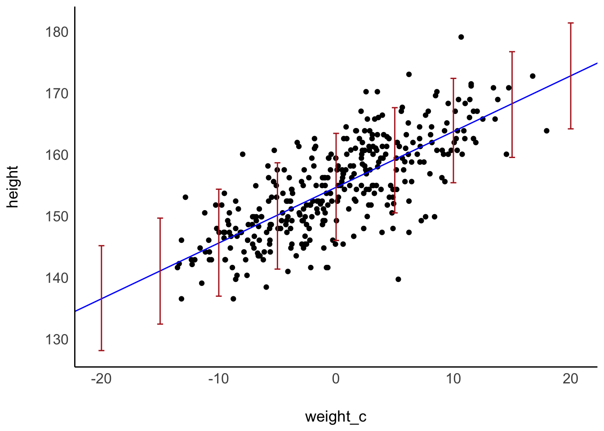
Die vertikalen Balken geben die 95%-KI wieder, die wir jeweils zu erwarten haben.
Noch eine andere Visualisierung, s. Abbildung 9.8; je dicker die “Katzenaugen”, desto mehr Stichproben (samples) liegen vor an der Stelle, und umso genauer ist die Schätzung.

Also: Je dicker die Violine, desto wahrscheinlicher \(\mu | w_i\).
Gerade eben haben wir bedingte PPVen angeschaut: Also eine PPV für einen bestimmten Prädiktorwert, z.B. bei einer Person mittleren Gewichts. Wir können auch den Mittelwert über alle bedingten PPV anschauen, sozusagen die “Master-PPV” oder “unbedingte PPV” oder schlicht PPV. Vergleichen wir die echten Werte für height, \(y\), mit den von der PPV simulierten Werten für height, \(y_{rep}\), s. Abbildung 9.9.
check_predictions(m43a) 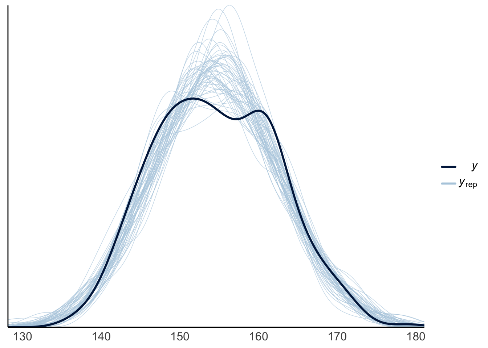
?check_predictions zeigt Hilfe für diese Funktion. Die Funktion zeigt die Vorhersagen für die AV laut der Posteriori-Verteilung.
Die zwei Gipfel hat unser Modell nicht mitgekriegt, ansonsten decken sich die Vorhersagen der PPV gut mit den echten Daten.
ppv_m43a %>%
summarise(
q_10 = quantile(height, prob = .1),
height_mean = mean(height),
q_50 = quantile(height, prob = .5),
q_90 = quantile(height, prob = .9)
)| q_10 | height_mean | q_50 | q_90 |
|---|---|---|---|
| 137.0299 | 154.6521 | 154.6775 | 171.8119 |
Was ist der 50% Bereich der Körpergröße?
ppv_m43a %>%
eti(ci = .5)| Parameter | CI | CI_low | CI_high |
|---|---|---|---|
| height | 0.5 | 144.8201 | 165.2368 |
{kind=link}
{kind=link}